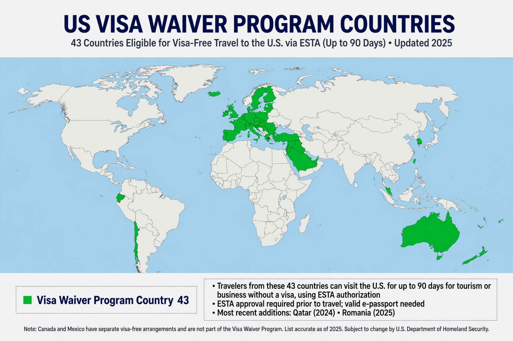

| Visa Waiver Program | |
|---|---|
 Participating countries | |
| Administered by | U.S. Department of Homeland Security |
| Established | 1986 (pilot); permanent 2000 |
| Eligible countries | 43 |
| Maximum stay | 90 days |
The Visa Waiver Program (VWP) is a program of the United States federal government allowing citizens of specific countries to travel to the United States for tourism, business, or while in transit for up to 90 days without having to obtain a visa.
The program was established in 1986 as a pilot and became permanent in 2000. It applies to citizens of designated countries who hold an e-passport and who obtain authorization through the Electronic System for Travel Authorization (ESTA) before travelling. As of the mid-2020s, 43 countries participate, including most European Union member states, the United Kingdom, Japan, South Korea, Australia, and New Zealand; Qatar, the most recent addition, joined in 2024.
Travellers admitted under the program waive any rights to review or appeal of admissibility determinations, and generally cannot extend their stay or change status. Designated countries must, among other criteria, maintain a low nonimmigrant visa refusal rate and offer reciprocal visa-free travel to United States citizens.
The Electronic System for Travel Authorization is an automated system that determines the eligibility of visitors to travel to the United States under the VWP. Authorization is generally valid for two years or until the passport expires, and a fee is charged for each application.
Categories: United States immigration law · Visa policy of the United States